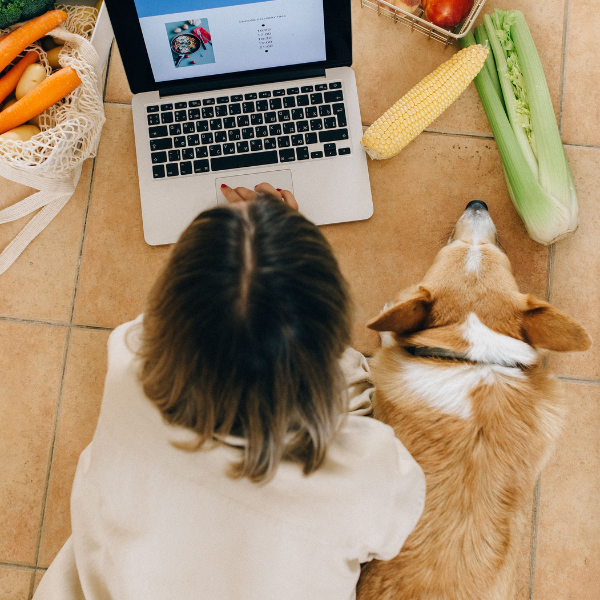
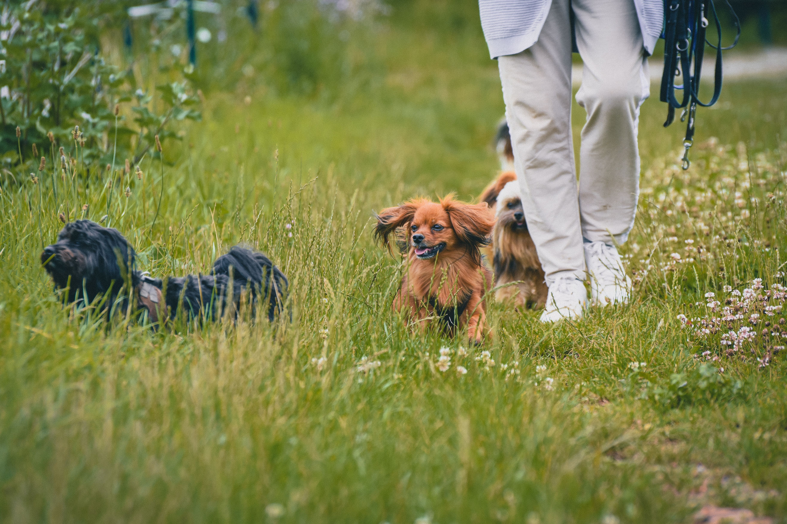
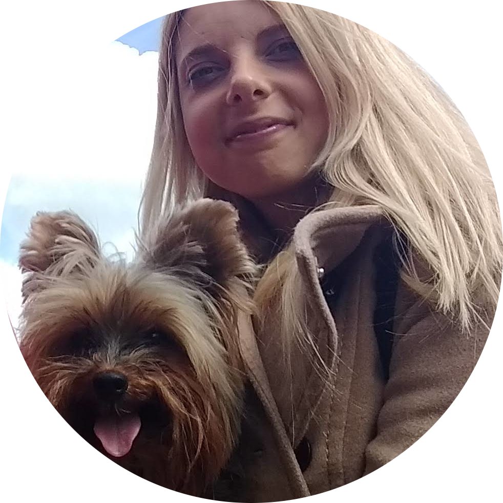
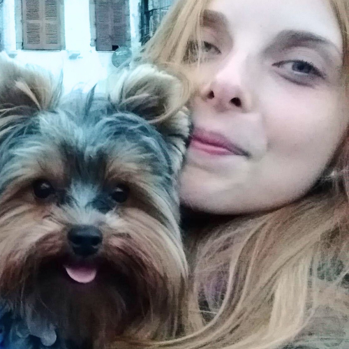

Something isn't right — but you can't quite put your finger on it.
Whether your dog is struggling with their weight, dealing with skin or digestive issues, or showing signs of anxiety or reactivity — untangling what's really going on takes someone who understands both. I'm Luciana — a Registered Dietitian specialising in canine nutrition and behaviour, bringing the same clinical rigour I applied in human healthcare to every dog I work with.
How I Can Help Your Dog
Every dog is different — so before we dive in, I offer a free discovery call. This helps us work out together where to focus and how I can best help you and your dog.
Sometimes owners come to me having already tried a few things — different foods, training classes — and their dog is still struggling. If that's you, that frustration is completely understandable. It often means the pieces haven't been looked at as a whole, yet. That's exactly what I'm here to do.
I look at your dog as a whole. That means considering four things that shape who they are:
- Their environment — your home, your neighbourhood, the daily routine, the people and animals around them. A dog who barks at every sound in a busy flat is having a very different experience to the same dog in a quiet house.
- Their genetics — breed instincts matter. A Beagle who follows their nose everywhere, a Border Collie who can't switch off, a Yorkie who's fiercer than their size suggests.
- Their health — how they feel physically shapes everything else. A dog in pain, with an unsettled gut, or missing key nutrients in their diet will struggle to learn, to settle, and to connect with you.
This is why I never look at behaviour without considering nutrition, and never look at nutrition without considering the dog as a whole.
Not sure where to start? The discovery call is the place.
Nutrition

What your dog eats is the foundation for how they feel, move, and behave — not just their weight or energy, but their skin, digestion, mood, and how they cope with stress.
Here's something most people don't realise: your dog's gut and brain are in a constant conversation. When a dog is anxious — before a thunderstorm, during fireworks, after a stressful walk — that stress can show up in their gut too, sometimes as loose stools, a sensitive stomach, or digestive flare-ups. That works the other way around as well: a dog whose gut isn't healthy, who isn't absorbing nutrients properly, or who's quietly uncomfortable after every meal will struggle to feel calm, focused, or settled — no matter how much training you do.
Finding the right approach shouldn't mean trawling through contradictory advice online — from conflicting label claims to well-meaning but inconsistent forum advice. I'll help you work out what's actually right for your dog, whether that's choosing the right kibble, understanding if raw or homemade food suits them, managing a chronic condition, or simply knowing they're getting what they actually need.
A nutrition consultation can help with:
- Choosing the right diet for your dog's life stage and health
- Which kibble to feed — and how to understand the label correctly
- Understanding the real options and trade-offs between raw, homemade, or commercial feeding
- Weight management
- Digestive concerns — loose stools, diarrhoea, sensitive stomach
- Itching skin and coat health
- From puppies to senior dogs
Not sure where to start? The discovery call is the place.
Behaviour

Sometimes a dog's behaviour makes complete sense once you understand what's driving it — what they've learned, what's happening in their environment, their breed instincts, and how they're feeling physically. A dog who destroys the house when left alone, lunges at other dogs, or can't settle as a puppy is communicating something, even if it doesn't feel that way at the moment.
Using reward-based, science-backed methods, I help you understand what your dog is really telling you — and how to respond in a way that builds trust, confidence, and a stronger bond between you.
A behaviour consultation can help with:
- Anxiety and fear — thunderstorms, fireworks, strangers, new environments
- Reactivity on walks
- Separation anxiety
- Puppy behaviour — jumping, nipping, toilet training, overwhelming energy
- Resource guarding
- Barking
- Behaviour changes alongside health conditions or chronic pain
Not sure where to start? The discovery call is the place.
Services & Pricing
A personalised online consultation — £70
I offer one-to-one consultations online, tailored entirely to your dog. Whether the focus is nutrition, behaviour, or both will be decided together in your free discovery call, based on what your dog needs most right now.
What's included:
- Free discovery call to identify priorities
- A comprehensive one-to-one online consultation
- Review of your dog's history, lifestyle, environment, and diet
- Personalised written recommendations you can actually use
- Practical next steps you can confidently put into place straight away
- Follow-up email support to review how your dog is responding to the plan and make any adjustments within the scope of our original work together
Not sure where to start?
Book a free discovery callReady to get started?
Book a consultationPre-adoption consultation — £30
Thinking about getting a new puppy or adopting a dog? I can help you choose the right breed for you.
Most people choose a dog with their heart — and that's not wrong. But when a dog's instincts don't fit the lifestyle they're coming into, it creates frustration for you and stress for the dog.
- If you love long walks and active weekends, some breeds will thrive beside you — others will find it hard to keep up.
- If you love having visitors, a dog bred to guard might make that harder.
- If you want a dog who follows you everywhere, an independent breed will leave you wondering if they even like you.
One conversation before you choose could save years of difficulty — for you and for the dog.
About Me

I'm Luciana — a Registered Dietitian specialising in canine nutrition and behaviour. Before extending my practice to dogs, I worked in human clinical nutrition — a field that demands precision, evidence, and the ability to translate complex science into practical, personalised plans. That foundation is what I bring to every dog I work with.
I believe in ongoing learning. The more I understand about how dogs perceive the world, the better I can help the owners who come to me and their dogs.
Nutrition
- Registered Dietitian (Human Nutrition) — professional registration in human nutritional science, giving me a strong clinical foundation I've built upon directly for my canine work
- Master's Course in Canine Nutrition — Linda Case, The Science Dog — an advanced, evidence-based programme covering canine nutritional science, homemade and commercial diets, and nutrition's role in health and behaviour
Behaviour
- Applied Ethology and Family Dog Mediation, The L.E.G.S. Model — Kim Brophey — certified in an approach rooted in the science of animal behaviour in natural and domestic environments, looking at the dog as a whole: their learning, environment, genetics, and health
Conferences & Continued Learning
- Control Unleashed – Resilience in Dogs (2024)
- LEGS in Motion (2023)
- Aggressive Dogs Conference (2022)
- Control Unleashed (2021)
Thor

Thor is my 12-year-old Yorkshire Terrier, living with osteoarthritis — and still going strong. He's the reason I developed my expertise in canine nutrition and behaviour: not just to manage his condition, but to understand him — why he does what he does, how he perceives the world, and why the friction between us eased when I finally understood what he actually needed. That understanding changed everything. That's what I want to help you find with your dog.
Get in Touch
Ready to get started? Book a free discovery call and we'll work a plan out together.
Not sure where to start? This is the place.
Already know what you need? Book directly here.